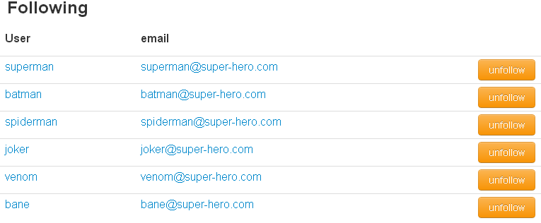

More on Messages
To view a message click on the its row in the list of messages.
If your inbox or sent-box is empty, then you have no messages.
To create a message click the "Create" button, specify the recipient(s), provide a title, compose your message, and click "Send".

More on Following & Followers
To view your "Following" or "Followers" list click on the corresponding link in the side-bar. Your choice of Followings will be represented in your Stream (under "My Stream") bringing Events created by these users into the mix. Following a user will also provide them with your username and email so that they may communicate with you.

To stop following a particular user simply click the "Unfollow" button for that entry.
By viewing your followers you can easily get in contact with these users via Project-X Messages or email.